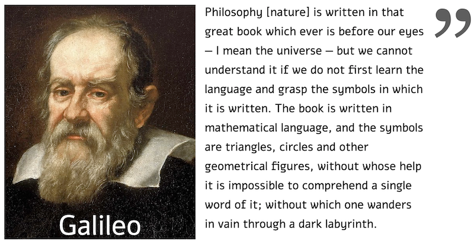

Goals
This basic Physics course has three main goals:
- By the end of this course you will be able to look at the world around you and start describing it in a formal (mathematical) language.
- By the end of this course you will be able to read a graph and tell the story behind it, i.e., you will translate a formal (mathematical) language into regular speech any human can understand.
- We will get acquainted with the concept of Energy. This, in my humblest opinion, is one of the most important ideas in Science.
Patron saint
Galileo is undoubtedly our hero in this course. Honorable runners-up: Archimedes and Newton.

Lecture Notes (in hebrew) and more
Book: I loosely use Halliday & Resnick’s Principles of Physics (11th edtion).
Software: I use Stylus Labs Write to write my classnotes, it is available for Windows, Mac, Linux, Android, and iOS.
Hardware: I use both a Wacom Cintiq 16 and an iPad air.
Legend:
lecture notes pdf
lecture notes source (write) svgz
powerpoint
widget in jupyter notebook (might take a while to load…)
other materials
animations and gifs
Click here for details on all lectures of the 2021-22 academic year.
Here are other very nice videos not directly related to any specific topic.
Some past exams (in hebrew)
| Year | Midterm | Moed A | Moed B | Moed C |
|---|---|---|---|---|
| 2021-2022 | ||||
| 2020-2021 | ||||
| 2019-2020 | ||||
| 2018-2019 | ||||
| 2017-2018 |
Extra stuff
Great online Physics resources: * Khan Academy - English * Khan Academy - עברית * Michel van Biezen * Walter Lewin’s 8.01x - MIT Physics I: Classical Mechanics * PhET: fun, free, interactive, research-based science and mathematics simulations